![]()
# BiocManager::install(c("AnnotationHub", "ensembldb", "multtest", "glmGamPoi"))
library(here)
library(fs)
library(httpgd)
library(Seurat)
library(SeuratData)
library(tidyverse)
library(patchwork)
library(Matrix)
library(RCurl)
library(scales)
library(cowplot)
library(metap)
library(AnnotationHub)
library(ensembldb)
library(multtest)
library(glmGamPoi)
library(SingleCellExperiment)
Note
!!!Note: All the contents are credited or adapted from HBC Single-cell RNA-seq data analysis workshop for leaning purpose.
Install and Load required packages
Introduction to single-cell RNA-seq
Why single-cell RNA-seq
Across human tissue there is an incredible diversity of cell cell types, states, and interactions. To better understand these tissues and the cell types present, single-cell RNA-seq (scRNA-seq) offers a glimpse into what genes are being expressed at the level of individual cells.

This exciting and cutting-edge method can be used to:
- explore which cell types are present in a tissue
- identify unknown/rare cell types or states
- elucidate the changes in gene expression during differentiation processes or across time or states
- identify genes that are differentially expressed in particular cell types between conditions (e.g. treatment or disease)
- explore changes in expression among a cell type while incorporating spatial, regulatory, and/or protein information
Challenges of scRNA-seq analysis
Despite scRNA-seq being able to capture expression at the cellular level, sample generation and library preparation is more expensive and the analysis is much more complicated and more difficult to interpret. The complexity of analysis of scRNA-seq data involves:
- Large volume of data
- Low depth of sequencing per cell
- Technical variability across cells/samples
- Biological variability across cells/samples
Large volumne of data
Expression data from scRNA-seq experiments represent tens or hundreds of thousands of reads for thousands of cells. The data output is much larger, requiring higher amounts of memory to analyze, larger storage requirements, and more time to run the analyses.
Low depth of sequencing per cell
For the droplet-based methods of scRNA-seq, the depth of sequencing is shallow, often detecting only 10-50% of the transcriptome per cell. This results in cells showing zero counts for many of the genes. However, in a particular cell, a zero count for a gene could either mean that the gene was not being expressed or the transcripts were just not detected. Across cells, genes with higher levels of expression tend to have fewer zeros. Due to this feature, many genes will not be detected in any cell and gene expression will be highly variable between cells.
Biological variability across cells/samples
Uninteresting sources of biological variation can result in gene expression between cells being more similar/different than the actual biological cell types/states, which can obscure the cell type identities. Uninteresting sources of biological variation (unless part of the experiment’s study) include:
- Transcriptional bursting: Gene transcription is not turned on all of the time for all genes. Time of harvest will determine whether gene is on or off in each cell.
- Varying rates of RNA processing: Different RNAs are processed at different rates.
- Continuous or discrete cell identities (e.g. the pro-inflammatory potential of each individual T cell): Continuous phenotypes are by definition variable in gene expression, and separating the continuous from the discrete can sometimes be difficult.
- Environmental stimuli: The local environment of the cell can influence the gene expression depending on spatial position, signaling molecules, etc.
- Temporal changes: Fundamental fluxuating cellular processes, such as cell cycle, can affect the gene expression profiles of individual cells.

Technical variability across cells/samples
Technical sources of variation can result in gene expression between cells being more similar/different based on technical sources instead of biological cell types/states, which can obscure the cell type identities. Technical sources of variation include:
- Cell-specific capture efficiency: Different cells will have differing numbers of transcripts captured resulting in differences in sequencing depth (e.g. 10-50% of transcriptome).
- Library quality: Degraded RNA, low viability/dying cells, lots of free floating RNA, poorly dissociated cells, and inaccurate quantitation of cells can result in low quality metrics
- Amplification bias: During the amplification step of library preparation, not all transcripts are amplified to the same level.
- Batch effects: Batch effects are a significant issue for scRNA-Seq analyses, since you can see significant differences in expression due solely to the batch effect.

How to know whether you have batches?
- Were all RNA isolations performed on the same day?
- Were all library preparations performed on the same day?
- Did the same person perform the RNA isolation/library preparation for all samples?
- Did you use the same reagents for all samples?
- Did you perform the RNA isolation/library preparation in the same location?
If any of the answers is ‘No’, then you have batches.
Best practices regarding batches:
Design the experiment in a way to avoid batches, if possible.
-
if unable to avoid batches:
- Do NOT confound your experiment by batch:

- DO split replicates of the different sample groups across batches. The more replicates the better (definitely more than 2), if doing DE across conditions or making conclusions at the population level. If using inDrops, which prepares a single library at a time, alternate the sample groups (e.g. don’t prepare all control libraries first, then prepare all treatment libraries).

- DO include batch information in your experimental metadata. During the analysis, we can regress out variation due to batch or integrate across batches, so it doesn’t affect our results if we have that information.
Conclusions
While scRNA-seq is a powerful and insightful method for the analysis of gene expression with single-cell resolution, there are many challenges and sources of variation that can make the analysis of the data complex or limited. Throughout the analysis of scRNA-seq data, we will try to account for or regress out variation due to the various sources of uninteresting variation in our data.
Overall, we recommend the following:
Do not perform single-cell RNA-seq unless it is necessary for the experimental question of interest. Could you answer the question using bulk sequencing, which is simpler and less costly? Perhaps FACS sorting the samples could allow for bulk analysis? Understand the details of the experimental question you wish to address. The recommended library preparation method and analysis workflow can vary based on the specific experiment.
-
Avoid technical sources of variability, if possible:
- Discuss experimental design with experts prior to the initiation of the experiment
- Isolate RNA from samples at same time
- Prepare libraries at same time or alternate sample groups to avoid batch confounding
- Do not confound sample groups by sex, age, or batch
Raw data to count matrix
Depending on the library preparation method used, the RNA sequences (also referred to as reads or tags), will be derived either from the 3’ ends (or 5’ ends) of the transcripts (10X Genomics, CEL-seq2, Drop-seq, inDrops) or from full-length transcripts (Smart-seq).
The choice of method involves the biological question of interest. The following advantages are listed below for the methods:
-
3’ (or 5’)-end sequencing:
- More accurate quantification through use of unique molecular identifiers distinguishing biological duplicates from amplification (PCR) duplicates
- Larger number of cells sequenced allows better identity of cell type populations
- Cheaper per cell cost
- Best results with > 10,000 cells
-
Full length sequencing:
- Detection of isoform-level differences in expression
- Identification of allele-specific differences in expression
- Deeper sequencing of a smaller number of cells
- Best for samples with low number of cells
Many of the same analysis steps need to occur for 3’-end sequencing as for full-length, but 3’ protocols have been increasing in popularity and consist of a few more steps in the analysis. Therefore, our materials are going to detail the analysis of data from these 3’ protocols with a focus on the droplet-based methods (inDrops, Drop-seq, 10X Genomics).
3’-end reads (includes all droplet-based methods)
For the 3’-end sequencing methods, reads originating from different molecules of the same transcript would have originated only from the 3’ end of the transcripts, so would have a high likelihood of having the same sequence. However, the PCR step during library preparation could also generate read duplicates. To determine whether a read is a biological or technical duplicate, these methods use unique molecular identifiers, or UMIs.
- Reads with different UMIs mapping to the same transcript were derived from different molecules and are biological duplicates - each read should be counted.
- Reads with the same UMI originated from the same molecule and are technical duplicates - the UMIs should be collapsed to be counted as a single read.
- In image below, the reads for ACTB should be collapsed and counted as a single read, while the reads for ARL1 should each be counted.

So we know that we need to keep track of the UMIs, but what other information do we need to properly quantify the expression in each gene in each of the cells in our samples? Regardless of droplet method, the following are required for proper quantification at the cellular level:

-
Sample index: determines which sample the read originated from (red bottom arrow)
- Added during library preparation - needs to be documented
-
Cellular barcode: determines which cell the read originated from (purple top arrow)
- Each library preparation method has a stock of cellular barcodes used during the library preparation
-
Unique molecular identifier (UMI): determines which transcript molecule the read originated from
- The UMI will be used to collapse PCR duplicates (purple bottom arrow)
- Sequencing read1: the Read1 sequence (red top arrow)
- Sequencing read2: the Read2 sequence (purple bottom arrow)
Generation of count matrix
We are going to start by discussing the first part of this workflow, which is generating the count matrix from the raw sequencing data. We will focus on the 3’ end sequencing used by droplet-based methods, such as inDrops, 10X Genomics, and Drop-seq.

After sequencing, the sequencing facility will either output the raw sequencing data as BCL or FASTQ format or will generate the count matrix. If the reads are in BCL format, then we will need to convert to FASTQ format. There is a useful command-line tool called bcl2fastq that can easily perform this conversion.
Note
We do not demultiplex at this step in the workflow. You may have sequenced 6 samples, but the reads for all samples may be present all in the same BCL or FASTQ file.
The generation of the count matrix from the raw sequencing data will go through similar steps for many of the scRNA-seq methods.

Quality Control
Explore the example dataset
For this workshop we will be working with a single-cell RNA-seq dataset which is part of a larger study from Kang et al, 2017. In this paper, the authors present a computational algorithm that harnesses genetic variation (eQTL) to determine the genetic identity of each droplet containing a single cell (singlet) and identify droplets containing two cells from different individuals (doublets).

The data used to test their algorithm is comprised of pooled Peripheral Blood Mononuclear Cells (PBMCs) taken from eight lupus patients, split into control and interferon beta-treated (stimulated) conditions.

Each step of this workflow has its own goals and challenges. For QC of our raw count data, they include:
Goals:
- To filter the data to only include true cells that are high quality, so that when we cluster our cells it is easier to identify distinct cell type populations.
- To identify any failed samples and either try to salvage the data or remove from analysis, in addition to, trying to understand why the sample failed.
Challenges:
- Delineating cells that are poor quality from less complex cells.
- Chossing appropriate thresholds for filtering, so as to keep high quality cells without removing biologically relevant cell types.
Recommendations:
- Have a good idea of your expectations for the cell types to be present prior to performing the QC. For instance, do you expect to have low complexity cells or cells with higher levels of mitochondrial expression in your sample? If so, then we need to account for this biology when assessing the quality of our data.
Generating quality metrics
dir <- here("projects", "scRNA-seq_online", "data", "single_cell_rnaseq")
## Create a Seurat object for each sample
for (file in c("ctrl_raw_feature_bc_matrix", "stim_raw_feature_bc_matrix")){
## Read in 10X data for a single sample (output is a sparse matrix)
seurat_data <- Read10X(data.dir = paste0(dir, "/data/", file))
## Turn count matrix into a Seurat object (output is a Seurat object)
seurat_obj <- CreateSeuratObject(counts = seurat_data,
min.features = 100,
project = file)
assign(file, seurat_obj)
}
## Create a merged Seurat object for multiple samples
merged_seurat <- merge(
x = ctrl_raw_feature_bc_matrix,
y = stim_raw_feature_bc_matrix,
add.cell.id = c("ctrl", "stim")
)
## Explore the metadata
head(merged_seurat@meta.data)
## orig.ident nCount_RNA nFeature_RNA
## ctrl_AAACATACAATGCC-1 ctrl_raw_feature_bc_matrix 2344 874
## ctrl_AAACATACATTTCC-1 ctrl_raw_feature_bc_matrix 3125 896
## ctrl_AAACATACCAGAAA-1 ctrl_raw_feature_bc_matrix 2578 725
## ctrl_AAACATACCAGCTA-1 ctrl_raw_feature_bc_matrix 3261 979
## ctrl_AAACATACCATGCA-1 ctrl_raw_feature_bc_matrix 746 362
## ctrl_AAACATACCTCGCT-1 ctrl_raw_feature_bc_matrix 3519 866
# View(merged_seurat@meta.data)There are three columns of information: - orig.ident: this often contains the sample identity if known, but will default to“SeuratProject”. - nCount_RNA: number of UMIs per cell. - nFeature_RNA: number of genes detected per cell.
In order to create the appropriate plots for the quality control analysis, we need to calculate some additional metrics. These include:
- number of genes detected per UMI: this metric with give us an idea of the complexity of our dataset (more genes detected per UMI, more complex our data)
- mitochondrial ratio: this metric will give us a percentage of cell reads originating from the mitochondrial genes
Novelty score
Mitochondrial Ratio
## Compute percent mito ratio
merged_seurat$mitoRatio <- PercentageFeatureSet(
object = merged_seurat, pattern = "^MT-"
)
merged_seurat$mitoRatio <- merged_seurat@meta.data$mitoRatio / 100Additional metadata columns
## Create metadata dataframe
metadata <- merged_seurat@meta.data
## Add cell IDs to metadata
metadata$cells <- rownames(metadata)
## Create sample column
metadata$sample <- NA
metadata$sample[which(str_detect(metadata$cells, "^ctrl_"))] <- "ctrl"
metadata$sample[which(str_detect(metadata$cells, "^stim_"))] <- "stim"
## Rename columns
metadata <- metadata |>
dplyr::rename(
seq_folder = orig.ident,
nUMI = nCount_RNA,
nGene = nFeature_RNA
)
## Add metadata back to Seurat object
merged_seurat@meta.data <- metadataAssessing the quality metrics
Assess various metrics and then decide on which cells are low quality and should be removed from the analysis:
- Cell counts
- UMI counts per cell
- Genes detected per cell
- Complexity (novelty score)
- Mitochondrial counts ratio
Cell counts
## Visualize the number of cell counts per sample
metadata |>
ggplot(aes(x=sample, fill=sample)) +
geom_bar() +
theme_classic() +
theme(axis.text.x = element_text(angle = 45, vjust = 1, hjust=1)) +
theme(plot.title = element_text(hjust=0.5, face="bold")) +
ggtitle("NCells")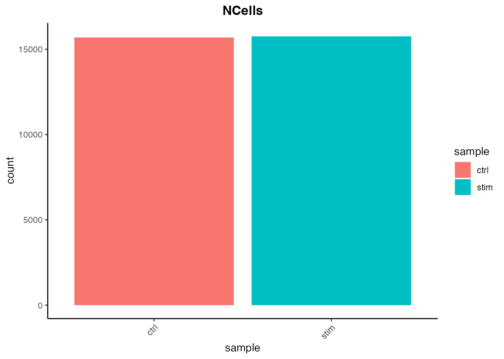
UMI counts (transcripts) per cell
## Visualize the number UMIs/transcripts per cell
# metadata |>
# ggplot(aes(color=sample, x=nUMI, fill= sample)) +
# geom_density(alpha = 0.2) +
# scale_x_log10() +
# theme_classic() +
# ylab("Cell density") +
# geom_vline(xintercept = 500)Genes detected per cell
## Visualize the distribution of genes detected per cell via histogram
# metadata |>
# ggplot(aes(color=sample, x=nGene, fill= sample)) +
# geom_density(alpha = 0.2) +
# theme_classic() +
# scale_x_log10() +
# geom_vline(xintercept = 300)Complexity
## Visualize the overall complexity of the gene expression by visualizing the genes detected per UMI (novelty score)
metadata |>
ggplot(aes(x=log10GenesPerUMI, color = sample, fill=sample)) +
geom_density(alpha = 0.2) +
theme_classic() +
geom_vline(xintercept = 0.8)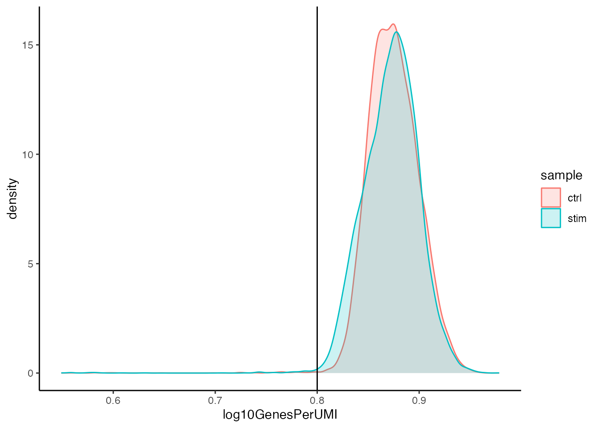
Mitochondrial counts ratio
## Visualize the distribution of mitochondrial gene expression detected per cell
metadata |>
ggplot(aes(color=sample, x=mitoRatio, fill=sample)) +
geom_density(alpha = 0.2) +
scale_x_log10() +
theme_classic() +
geom_vline(xintercept = 0.2)
## Warning in scale_x_log10(): log-10 transformation introduced infinite values.
## Warning: Removed 118 rows containing non-finite outside the scale range (`stat_density()`).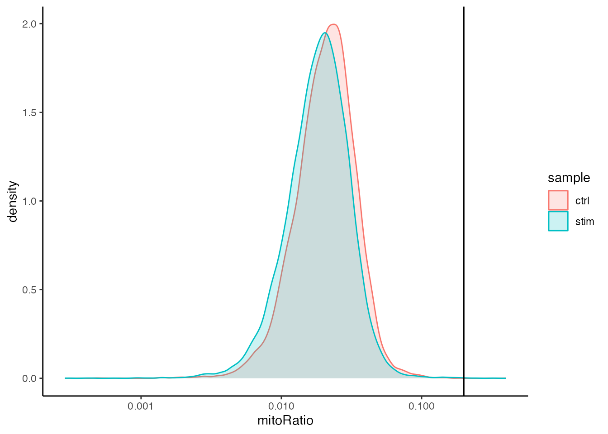
Joint filtering effects
## Visualize the correlation between genes detected and number of UMIs and determine whether strong presence of cells with low numbers of genes/UMIs
metadata |>
ggplot(aes(x=nUMI, y=nGene, color=mitoRatio)) +
geom_point() +
scale_colour_gradient(low = "gray90", high = "black") +
stat_smooth(method=lm) +
scale_x_log10() +
scale_y_log10() +
theme_classic() +
geom_vline(xintercept = 500) +
geom_hline(yintercept = 250) +
facet_wrap(~sample)
## `geom_smooth()` using formula = 'y ~ x'
## Warning: The following aesthetics were dropped during statistical transformation: colour.
## ℹ This can happen when ggplot fails to infer the correct grouping structure in the data.
## ℹ Did you forget to specify a `group` aesthetic or to convert a numerical variable into a factor?
## The following aesthetics were dropped during statistical transformation: colour.
## ℹ This can happen when ggplot fails to infer the correct grouping structure in the data.
## ℹ Did you forget to specify a `group` aesthetic or to convert a numerical variable into a factor?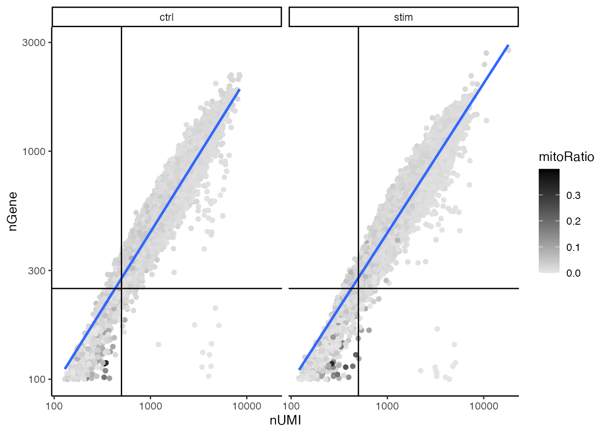
Perform filtering
Cell-level filtering
Often the recommendations mentioned earlier are a rough guideline, and the specific experiment needs to inform the exact thresholds chosen. We will use the following thresholds:
- nUMI > 500
- nGene > 250
- log10GenesPerUMI > 0.8
- mitoRatio < 0.2
## Filter out low quality cells using selected thresholds - these will change with experiment
filtered_seurat <- subset(
x = merged_seurat,
subset = (nUMI >= 500) &
(nGene >= 250) &
(log10GenesPerUMI > 0.80) &
(mitoRatio < 0.20)
)Gene-level filtering
Within our data we will have many genes with zero counts. These genes can dramatically reduce the average expression for a cell and so we will remove them from our data. We will start by identifying which genes have a zero count in each cell:
## Extract counts
filtered_seurat <- JoinLayers(filtered_seurat)
counts <- GetAssayData(object = filtered_seurat, layer = "counts")
# counts <- LayerData(object = filtered_seurat, layer = "counts")
## Output a logical matrix specifying for each gene on whether or not there are more than zero counts per cell
nonzero <- counts > 0Now, we will perform some filtering by prevalence. If a gene is only expressed in a handful of cells, it is not particularly meaningful as it still brings down the averages for all other cells it is not expressed in. For our data we choose to keep only genes which are expressed in 10 or more cells. By using this filter, genes which have zero counts in all cells will effectively be removed.
## Sums all TRUE values and returns TRUE if more than 10 TRUE values per gene
keep_genes <- Matrix::rowSums(nonzero) >= 10
# Only keeping those genes expressed in more than 10 cells
filtered_counts <- counts[keep_genes, ]
# Reassign to filtered Seurat object
filtered_seurat <- CreateSeuratObject(
filtered_counts, meta.data = filtered_seurat@meta.data
)
## Save filtered cells
# saveRDS(filtered_seurat, file = paste0(dir, "/data/filtered_seurat.rds"))
# saveRDS(merged_seurat, file = paste0(dir, "/data/merged_seurat.rds"))Re-assess QC metrics
## Save filtered subset to new metadata
metadata_clean <- filtered_seurat@meta.data
metadata_list <- list(
before_filtering = metadata,
after_filtering = metadata_clean
)
plots <- list()
for (i in names(metadata_list)) {
## Cell counts
plots[["cell_counts"]][[i]] <- metadata_list[[i]] |>
ggplot(aes(x = sample, fill = sample)) +
geom_bar() +
theme_classic() +
theme(axis.text.x = element_text(angle = 45, vjust = 1, hjust = 1)) +
theme(plot.title = element_text(hjust = 0.5, face = "bold")) +
labs(title = paste("NCells", i, sep = "_"))
## UMI counts
## The filtering using a threshold of 500 has removed the cells with low numbers of UMIs from the analysis.
plots[["UMI_counts"]][[i]] <- metadata_list[[i]] |>
ggplot(aes(color = sample, x = nUMI, fill = sample)) +
geom_density(alpha = 0.2) +
scale_x_continuous(limits = c(100, 10000), trans = "log10") +
theme_classic() +
geom_vline(xintercept = 500) +
# coord_fixed() +
labs(
title = paste("UMI", i, sep = "_"),
y = "Cell density"
)
## Genes detected
plots[["genes_detected"]][[i]] <- metadata_list[[i]] |>
ggplot(aes(color = sample, x = nGene, fill = sample)) +
geom_density(alpha = 0.2) +
theme_classic() +
scale_x_continuous(limits = c(100, 3000), trans = "log10") +
geom_vline(xintercept = 250) +
# coord_fixed() +
labs(title = paste("genes_detected", i, sep = "_"))
## Novelty/Complexity
plots[["overall_complexity"]][[i]] <- metadata_list[[i]] |>
ggplot(aes(x=log10GenesPerUMI, color = sample, fill=sample)) +
geom_density(alpha = 0.2) +
theme_classic() +
geom_vline(xintercept = 0.8) +
# coord_fixed() +
labs(title = paste("overall_complexity", i, sep = "_"))
## Mitochondrial counts ratio
plots[["mitochondrial_ratio"]][[i]] <- metadata_list[[i]] |>
ggplot(aes(color=sample, x=mitoRatio, fill=sample)) +
geom_density(alpha = 0.2) +
scale_x_continuous(trans = "log10") +
theme_classic() +
# coord_fixed() +
geom_vline(xintercept = 0.2) +
labs(title = paste("mitochondrial_ratio", i, sep = "_"))
## UMIs vs genes
plots[["UMIs_genes"]][[i]] <- metadata_list[[i]] |>
ggplot(aes(x = nUMI, y = nGene, color = mitoRatio)) +
geom_point() +
scale_colour_gradient(low = "gray90", high = "black") +
stat_smooth(method = lm) +
scale_x_log10() +
scale_y_log10() +
theme_classic() +
# coord_fixed() +
geom_vline(xintercept = 500) +
geom_hline(yintercept = 250) +
facet_wrap(~sample) +
labs(title = paste("UMIs_genes", i, sep = "_"))
}Report the number of cells left for each sample, and comment on whether the number of cells removed is high or low. Can you give reasons why this number is still not ~12K (which is how many cells were loaded for the experiment)?
After filtering, we should not have more cells than we sequenced. Generally we aim to have about the number we sequenced or a bit less.
There are just under 15K cells left for both the control and stim cells. The number of cells removed is reasonably low.
While it would be ideal to have 12K cells, we do not expect that due to:
- barcoded beads in the droplet with no actual cell present
- more than one barcode in the droplet; results in a single cell’s mRNA represented as two cells
- dead or dying cells encapsulated into the droplet
If we still see higher than expected numbers of cells after filtering, this means we could afford to filter more stringently (but we don’t necessarily have to).
p_combined <- wrap_plots(plots$cell_counts, nrow = 1)
## Get the min and max values from the ranges
p_ranges_x <- c(ggplot_build(p_combined[[1]])$layout$panel_scales_x[[1]]$range$range,
ggplot_build(p_combined[[2]])$layout$panel_scales_x[[1]]$range$range)
p_ranges_y <- c(ggplot_build(p_combined[[1]])$layout$panel_scales_y[[1]]$range$range,
ggplot_build(p_combined[[2]])$layout$panel_scales_y[[1]]$range$range)
## Apply these ranges to the patchwork object
p_combined &
xlim(min(p_ranges_x), max(p_ranges_x)) &
ylim(min(p_ranges_y), max(p_ranges_y))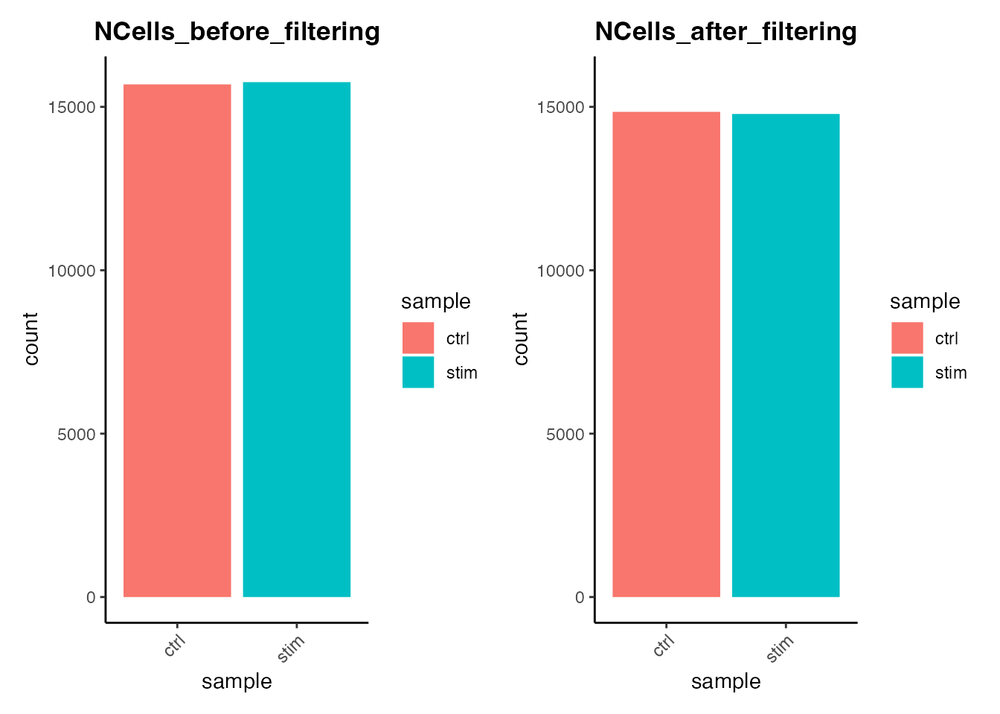
wrap_plots(plots$UMI_counts, nrow = 1)
## Warning: Removed 4 rows containing non-finite outside the scale range (`stat_density()`).
## Warning: Removed 3 rows containing non-finite outside the scale range (`stat_density()`).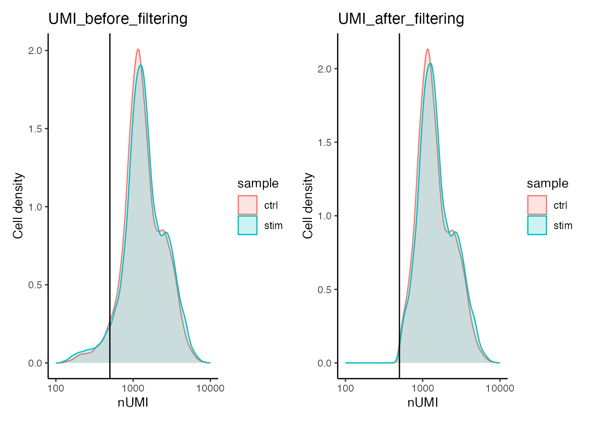
After filtering for nGene per cell, you should still observe a small shoulder to the right of the main peak. What might this shoulder represent?
This peak could represent a biologically distinct population of cells. It could be a set a of cells that share some properties and as a consequence exhibit more diversity in its transcriptome (with the larger number of genes detected).
## The filtering using a threshold of 500 has removed the cells with low numbers of UMIs from the analysis.
wrap_plots(plots$genes_detected, nrow = 1)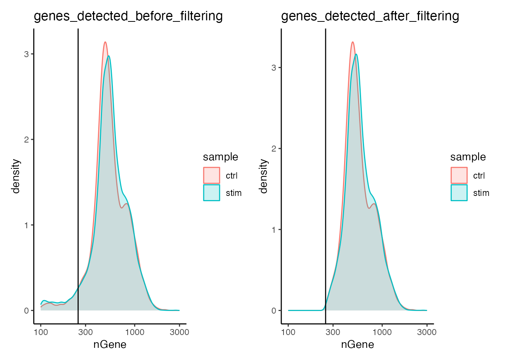
When plotting the nGene against nUMI do you observe any data points in the bottom right quadrant of the plot? What can you say about these cells that have been removed?
The cells that were removed were those with high nUMI but low numbers of genes detected. These cells had many captured transcripts but represent only a small number of genes. These low complexity cells could represent a specific cell type (i.e. red blood cells which lack a typical transcriptome), or could be due to some other strange artifact or contamination.
wrap_plots(plots$UMIs_genes, nrow = 1)
## `geom_smooth()` using formula = 'y ~ x'
## Warning: The following aesthetics were dropped during statistical transformation: colour.
## ℹ This can happen when ggplot fails to infer the correct grouping structure in the data.
## ℹ Did you forget to specify a `group` aesthetic or to convert a numerical variable into a factor?
## The following aesthetics were dropped during statistical transformation: colour.
## ℹ This can happen when ggplot fails to infer the correct grouping structure in the data.
## ℹ Did you forget to specify a `group` aesthetic or to convert a numerical variable into a factor?
## `geom_smooth()` using formula = 'y ~ x'
## Warning: The following aesthetics were dropped during statistical transformation: colour.
## ℹ This can happen when ggplot fails to infer the correct grouping structure in the data.
## ℹ Did you forget to specify a `group` aesthetic or to convert a numerical variable into a factor?
## The following aesthetics were dropped during statistical transformation: colour.
## ℹ This can happen when ggplot fails to infer the correct grouping structure in the data.
## ℹ Did you forget to specify a `group` aesthetic or to convert a numerical variable into a factor?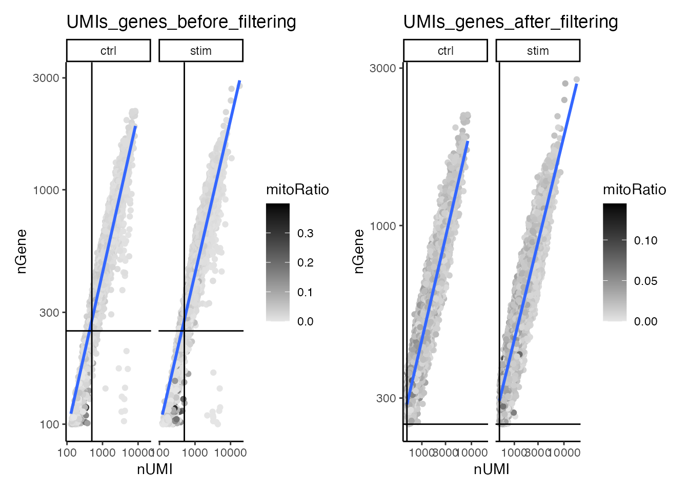
wrap_plots(plots$mitochondrial_ratio, nrow = 1)
## Warning in scale_x_continuous(trans = "log10"): log-10 transformation introduced infinite values.
## Warning: Removed 118 rows containing non-finite outside the scale range (`stat_density()`).
## Warning in scale_x_continuous(trans = "log10"): log-10 transformation introduced infinite values.
## Warning: Removed 11 rows containing non-finite outside the scale range (`stat_density()`).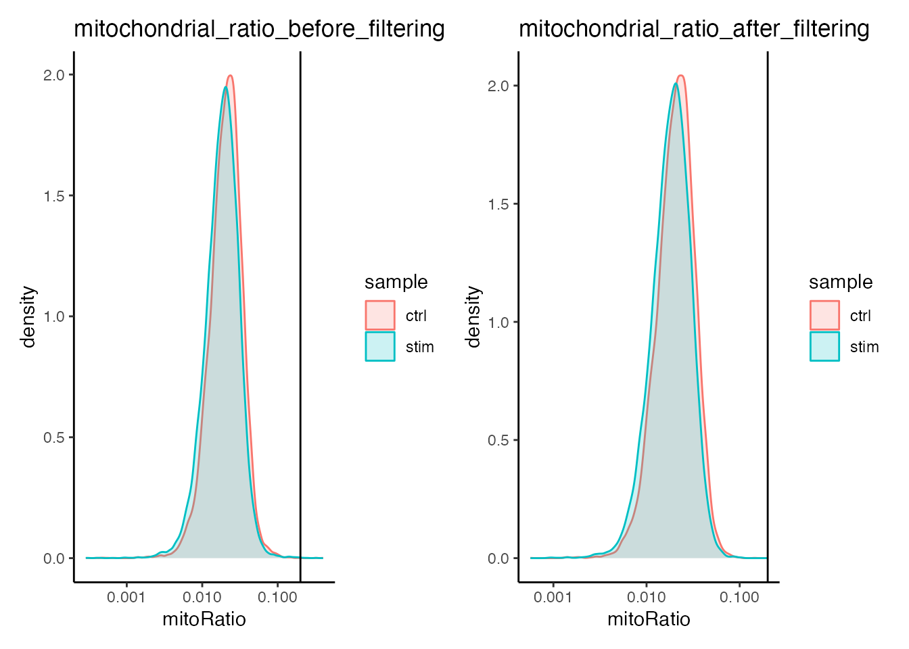
wrap_plots(plots$overall_complexity, nrow = 1)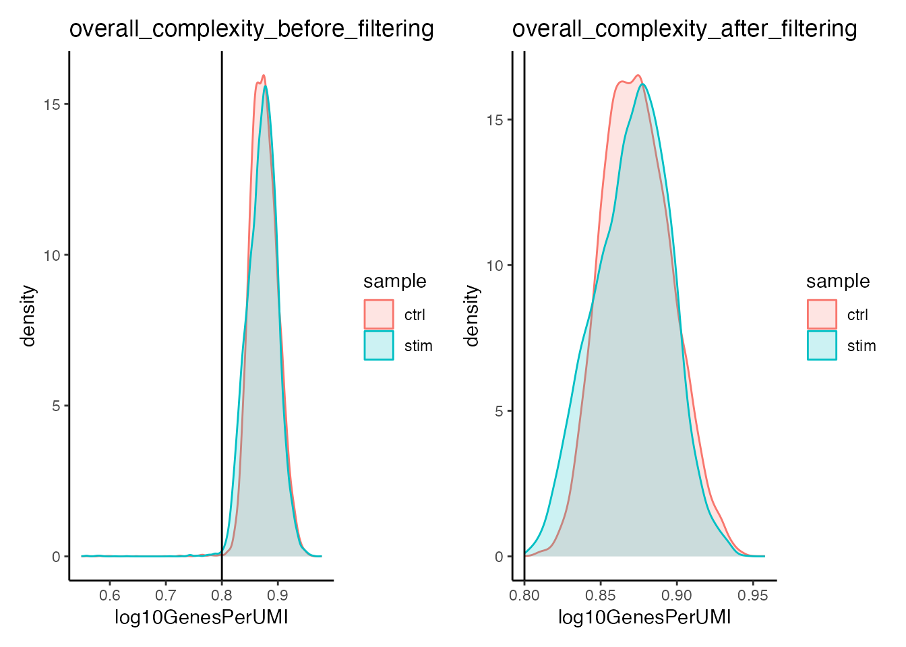
Normalization
Goals:
- To accurately normalize the gene expression values to account for differences in sequencing depth and overdispersed count values.
- To identify the most variant genes likely to be indicative of the different cell types present.
Challenges:
- Checking and removing unwanted variation so that we do not have cells clustering by artifacts downstream
Recommendations:
- Have a good idea of your expectations for the cell types to be present prior to performing the clustering. Know whether you expect cell types of low complexity or higher mitochondrial content AND whether the cells are differentiating
- Regress out number of UMIs (default using sctransform), mitochondrial content, and cell cycle, if needed and appropriate for experiment, so not to drive clustering downstream
An essential first step in the majority of mRNA expression analyses is normalization, whereby systematic variations are adjusted for to make expression counts comparable across genes and/or samples. The counts of mapped reads for each gene is proportional to the expression of RNA (“interesting”) in addition to many other factors (“uninteresting”). Normalization is the process of adjusting raw count values to account for the “uninteresting” factors.
The main factors often considered during normalization are:
- Sequencing depth: Accounting for sequencing depth is necessary for comparison of gene expression between cells. In the example below, each gene appears to have doubled in expression in cell 2, however this is a consequence of cell 2 having twice the sequencing depth.

Each cell in scRNA-seq will have a differing number of reads associated with it. So to accurately compare expression between cells, it is necessary to normalize for sequencing depth.
- Gene length: Accounting for gene length is necessary for comparing expression between different genes within the same cell. The number of reads mapped to a longer gene can appear to have equal count/expression as a shorter gene that is more highly expressed.

Note
If using a 3’ or 5’ droplet-based method, the length of the gene will not affect the analysis because only the 5’ or 3’ end of the transcript is sequenced. However, if using full-length sequencing, the transcript length should be accounted for.
Explore sources of unwanted variation
## Normalize the counts
filtered_seurat <- readRDS(paste0(dir, "/data/filtered_seurat.rds"))
seurat_phase <- NormalizeData(filtered_seurat)
## Normalizing layer: countsEvaluating effects of cell cycle
## Load cell cycle markers
load(paste0(dir, "/data/cycle.rda"))
head(g2m_genes)
## [1] "NCAPD2" "ANLN" "TACC3" "HMMR" "GTSE1" "NDC80"
head(s_genes)
## [1] "UBR7" "RFC2" "RAD51" "MCM2" "TIPIN" "MCM6"
## Score cells for cell cycle
seurat_phase <- CellCycleScoring(
seurat_phase,
g2m.features = g2m_genes,
s.features = s_genes
)
## Warning: The following features are not present in the object: RAD51, CDC45, E2F8, DTL, EXO1, UHRF1, not searching for symbol synonyms
## Warning: The following features are not present in the object: ANLN, GTSE1, NEK2, HJURP, DLGAP5, PIMREG, KIF2C, CDC25C, CKAP2L, not searching for symbol synonyms
## View cell cycle scores and phases assigned to cells
head(seurat_phase@meta.data)
## orig.ident nCount_RNA nFeature_RNA seq_folder nUMI nGene log10GenesPerUMI mitoRatio cells sample S.Score G2M.Score Phase
## ctrl_AAACATACAATGCC-1 ctrl 2344 874 ctrl_raw_feature_bc_matrix 2344 874 0.8729 0.01962 ctrl_AAACATACAATGCC-1 ctrl 0.04331 0.05423 G2M
## ctrl_AAACATACATTTCC-1 ctrl 3124 895 ctrl_raw_feature_bc_matrix 3125 896 0.8448 0.01792 ctrl_AAACATACATTTCC-1 ctrl 0.02662 0.05160 G2M
## ctrl_AAACATACCAGAAA-1 ctrl 2578 725 ctrl_raw_feature_bc_matrix 2578 725 0.8385 0.01552 ctrl_AAACATACCAGAAA-1 ctrl -0.04671 -0.04842 G1
## ctrl_AAACATACCAGCTA-1 ctrl 3260 978 ctrl_raw_feature_bc_matrix 3261 979 0.8513 0.01380 ctrl_AAACATACCAGCTA-1 ctrl -0.05833 0.05046 G2M
## ctrl_AAACATACCATGCA-1 ctrl 746 362 ctrl_raw_feature_bc_matrix 746 362 0.8907 0.02145 ctrl_AAACATACCATGCA-1 ctrl 0.03930 -0.02996 S
## ctrl_AAACATACCTCGCT-1 ctrl 3518 865 ctrl_raw_feature_bc_matrix 3519 866 0.8283 0.01392 ctrl_AAACATACCTCGCT-1 ctrl 0.03201 0.01686 SAfter scoring the cells for cell cycle, we would like to determine whether cell cycle is a major source of variation in our dataset using PCA.
## Identify the most variable genes
seurat_phase <- FindVariableFeatures(
seurat_phase,
selection.method = "vst",
nfeatures = 2000,
verbose = FALSE
)
## Scale the counts
seurat_phase <- ScaleData(seurat_phase)
## Centering and scaling data matrix
## Identify the 15 most highly variable genes
ranked_variable_genes <- VariableFeatures(seurat_phase)
top_genes <- ranked_variable_genes[1:15]
## Plot the average expression and variance of these genes
## With labels to indicate which genes are in the top 15
p <- VariableFeaturePlot(seurat_phase)
LabelPoints(plot = p, points = top_genes, repel = TRUE)
## When using repel, set xnudge and ynudge to 0 for optimal results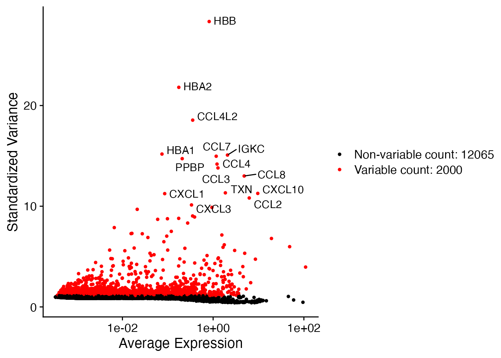
## Perform PCA
seurat_phase <- RunPCA(seurat_phase)
## PC_ 1
## Positive: CCR7, LTB, TRBC1, ITM2A, TRAT1, IL32, CCL5, NKG7, ALOX5AP, GZMB
## GNLY, CST7, CREM, CD27, PASK, SNHG8, BIRC3, CD8A, MYC, GPR171
## CD8B, GZMH, KLRD1, ADTRP, PRF1, NOP58, FGFBP2, CXCR3, TIGIT, SESN3
## Negative: C15orf48, TYROBP, CST3, FCER1G, SOD2, TYMP, ANXA5, TIMP1, KYNU, LGALS3
## FTL, FCN1, CD63, LGALS1, CTSB, APOBEC3A, IGSF6, LYZ, S100A4, ANXA2
## SPI1, CCL2, PSAP, NPC2, NINJ1, CD68, S100A11, CTSL, MAFB, IDO1
## PC_ 2
## Positive: CXCL8, CLEC5A, CD14, VCAN, S100A8, IER3, IL1B, MARCKSL1, PID1, CD9
## PLAUR, S100A9, THBS1, OSM, PHLDA1, SLC7A11, PPIF, GAPT, AC245128.3, INSIG1
## MCEMP1, ENG, CXCL3, MGST1, OLR1, LIMS1, GAPDH, SMIM25, PFN1, FTH1
## Negative: ISG15, IFIT3, IFIT1, ISG20, LY6E, TNFSF10, IFIT2, MX1, IFI6, RSAD2
## CXCL10, OAS1, CXCL11, IFITM3, MT2A, USP18, IRF7, OASL, IDO1, TNFSF13B
## IL1RN, CCL8, EPSTI1, IFITM2, SAMD9L, GBP1, APOBEC3A, PLSCR1, CMPK2, DDX58
## PC_ 3
## Positive: IGHM, CD79A, HLA-DQA1, IGKC, CD74, CD83, HLA-DQB1, HLA-DRA, MS4A1, HLA-DRB1
## HLA-DPA1, HLA-DPB1, IRF8, CCR7, SYNGR2, HERPUD1, IGLC2, ID3, IGHD, BLNK
## HLA-DMA, HVCN1, HSP90AB1, RUBCNL, CD79B, BANK1, TCL1A, HLA-DMB, REL, MIR155HG
## Negative: NKG7, GNLY, CCL5, ANXA1, GZMB, PRF1, KLRD1, GZMH, CST7, GZMA
## FGFBP2, CLIC3, CTSW, TRBC1, FASLG, OASL, IL32, CD8A, HOPX, MT2A
## KLRC1, SH3BGRL3, SPON2, CCL4, CXCR3, C12orf75, GCHFR, SH2D1B, TRGC2, LAG3
## PC_ 4
## Positive: NKG7, GZMB, GNLY, CCL5, CST7, PRF1, KLRD1, CLIC3, GZMA, GZMH
## FGFBP2, CTSW, FASLG, HOPX, KLRC1, HLA-DPB1, HLA-DPA1, CD74, C12orf75, SH2D1B
## IGFBP7, SPON2, TNFRSF18, ID2, HLA-DQA1, CXCR3, RAMP1, CD38, TRDC, GCHFR
## Negative: LTB, CCR7, TRAT1, ADTRP, TSHZ2, PASK, SOCS3, CMTM8, CD27, CCL8
## CCL2, MYC, CTSL, TARBP1, NELL2, CCL7, SNHG8, IL1RN, MAL, ITM2A
## SESN3, HPSE, SOD2, IL23A, FBLN7, SCML1, APOBEC3A, TXNIP, LPAR6, S100A9
## PC_ 5
## Positive: VMO1, FCGR3A, MS4A4A, MS4A7, CXCL16, PPM1N, LST1, PECAM1, SMPDL3A, JPT1
## AIF1, CH25H, SERPINA1, CDKN1C, LRRC25, CASP5, PLAC8, VASP, GBP5, SMIM25
## RGS19, LILRA5, HCAR3, C3AR1, CD86, PILRA, CFD, IGHM, SCIMP, STXBP2
## Negative: LMNA, HSPA1A, HSPE1, FABP5, TXN, CACYBP, HSPA1B, SRSF2, CCL7, HSPB1
## HSPH1, GADD45B, CCL2, HSPD1, HSP90AB1, PLA2G7, HSPA5, HSP90AA1, GPR183, CCL8
## TCP1, SRSF7, SDS, DNAJB4, DNAJB1, ZFAND2A, NOP58, MIR155HG, NR4A2, TPM4
## Plot the PCA colored by cell cycle phase
DimPlot(
seurat_phase,
reduction = "pca",
group.by= "Phase",
split.by = "Phase"
)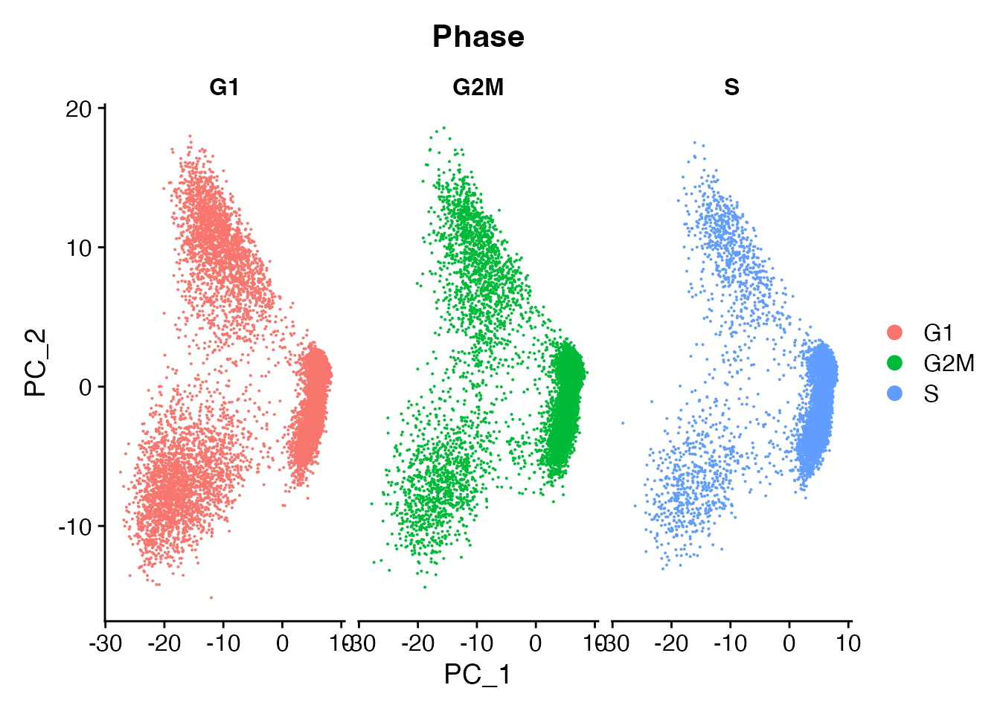
We do not see large differences due to cell cycle phase. Based on this plot, we would not regress out the variation due to cell cycle.
Evaluating effects of mitochondrial expression
Mitochondrial expression is another factor which can greatly influence clustering. Oftentimes, it is useful to regress out variation due to mitochondrial expression. However, if the differences in mitochondrial gene expression represent a biological phenomenon that may help to distinguish cell clusters, then we advise not regressing this out. In this exercise, we can perform a quick check similar to looking at cell cycle and decide whether or not we want to regress it out.
## Check quartile values
summary(seurat_phase@meta.data$mitoRatio)
## Min. 1st Qu. Median Mean 3rd Qu. Max.
## 0.0000 0.0144 0.0199 0.0214 0.0267 0.1446
## Turn mitoRatio into categorical factor vector based on quartile values
seurat_phase@meta.data$mitoFr <- cut(
seurat_phase@meta.data$mitoRatio,
breaks = c(-Inf, 0.0144, 0.0199, 0.0267, Inf),
labels = c("Low", "Medium", "Medium high", "High")
)
## Plot the PCA colored by mitoFr
DimPlot(
seurat_phase,
reduction = "pca",
group.by = "mitoFr",
split.by = "mitoFr"
)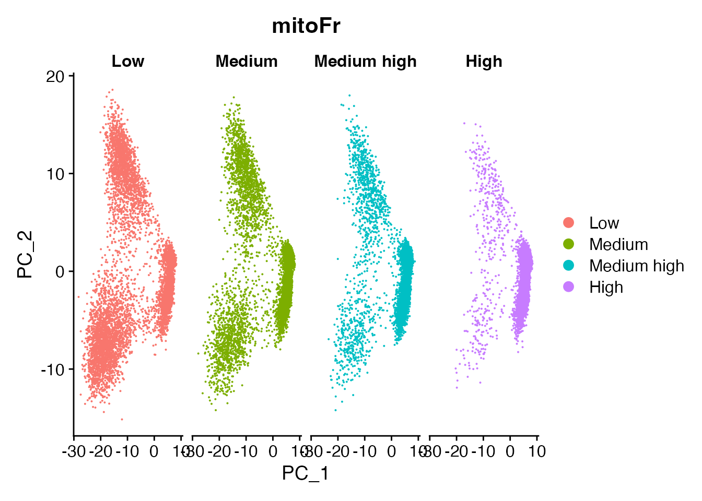
Based on this plot, we can see that there is a different pattern of scatter for the plot containing cells with “High” mitochondrial expression. We observe that the lobe of cells on the left-hand side of the plot is where most of the cells with high mitochondrial expression are. For all other levels of mitochondrial expression we see a more even distribution of cells across the PCA plot.
Would you regress out mitochndrial fraction as a source of unwanted variation?
Since we see this clear difference, we will regress out the ‘mitoRatio’ when we identify the most variant genes.
Normalization and regressing out sources of unwanted variation using SCTransform
## Split seurat object by condition to perform cell cycle scoring and SCT on all samples
split_seurat <- SplitObject(seurat_phase, split.by = "sample")
## keep them as separate objects and transform them as that is what is required for integration
for (i in 1:length(split_seurat)) {
split_seurat[[i]] <- SCTransform(
split_seurat[[i]], vars.to.regress = c("mitoRatio"), vst.flavor = "v2"
)
}
## Running SCTransform on assay: RNA
## Running SCTransform on layer: counts
## vst.flavor='v2' set. Using model with fixed slope and excluding poisson genes.
## Variance stabilizing transformation of count matrix of size 13799 by 14847
## Model formula is y ~ log_umi
## Get Negative Binomial regression parameters per gene
## Using 2000 genes, 5000 cells
## Found 258 outliers - those will be ignored in fitting/regularization step
## Second step: Get residuals using fitted parameters for 13799 genes
## Computing corrected count matrix for 13799 genes
## Calculating gene attributes
## Wall clock passed: Time difference of 23.28 secs
## Determine variable features
## Regressing out mitoRatio
## Centering data matrix
## Getting residuals for block 1(of 3) for counts dataset
## Getting residuals for block 2(of 3) for counts dataset
## Getting residuals for block 3(of 3) for counts dataset
## Regressing out mitoRatio
## Centering data matrix
## Finished calculating residuals for counts
## Set default assay to SCT
## Running SCTransform on assay: RNA
## Running SCTransform on layer: counts
## vst.flavor='v2' set. Using model with fixed slope and excluding poisson genes.
## Variance stabilizing transformation of count matrix of size 13695 by 14782
## Model formula is y ~ log_umi
## Get Negative Binomial regression parameters per gene
## Using 2000 genes, 5000 cells
## Found 264 outliers - those will be ignored in fitting/regularization step
## Second step: Get residuals using fitted parameters for 13695 genes
## Computing corrected count matrix for 13695 genes
## Calculating gene attributes
## Wall clock passed: Time difference of 19.83 secs
## Determine variable features
## Regressing out mitoRatio
## Centering data matrix
## Getting residuals for block 1(of 3) for counts dataset
## Getting residuals for block 2(of 3) for counts dataset
## Getting residuals for block 3(of 3) for counts dataset
## Regressing out mitoRatio
## Centering data matrix
## Finished calculating residuals for counts
## Set default assay to SCT
## Check which assays are stored in objects
split_seurat$ctrl@assays
## $RNA
## Assay (v5) data with 14065 features for 14847 cells
## Top 10 variable features:
## HBB, HBA2, CCL4L2, HBA1, IGKC, CCL7, PPBP, CCL4, CCL3, CCL8
## Layers:
## counts, data, scale.data
##
## $SCT
## SCTAssay data with 13799 features for 14847 cells, and 1 SCTModel(s)
## Top 10 variable features:
## FTL, CCL2, IGKC, GNLY, IGLC2, CCL3, TIMP1, IGHM, CCL4, PPBP
split_seurat$stim@assays
## $RNA
## Assay (v5) data with 14065 features for 14782 cells
## Top 10 variable features:
## HBB, HBA2, CCL4L2, HBA1, IGKC, CCL7, PPBP, CCL4, CCL3, CCL8
## Layers:
## counts, data, scale.data
##
## $SCT
## SCTAssay data with 13695 features for 14782 cells, and 1 SCTModel(s)
## Top 10 variable features:
## IGKC, FTL, CCL8, CCL2, GNLY, CXCL10, CCL7, CCL4, IGLC2, CCL3
## Save the split seurat object
# saveRDS(split_seurat, paste0(dir, "/data/split_seurat.rds"))Any observations for the genes or features listed under “First 10 features:” and the “Top 10 variable features:” for “ctrl” versus “stim”?
For the first 10 features, it appears that the same genes are present in both “ctrl” and “stim”
For the top 10 variable features, these are different in the the 2 conditions with some overlap between them.
Integration
Goals:
- To align same cell types across conditions.
Challenges:
- Aligning cells of similar cell types so that we do not have clustering downstream due to differences between samples, conditions, modalities, or batches
Recommendations:
- Go through the analysis without integration first to determine whether integration is necessary
To integrate or not to integrate?
Generally, we always look at our clustering without integration before deciding whether we need to perform any alignment. Do not just always perform integration because you think there might be differences - explore the data. If we had performed the normalization on both conditions together in a Seurat object and visualized the similarity between cells, we would have seen condition-specific clustering:
## Run UMAP
seurat_phase <- RunUMAP(
seurat_phase,
dims = 1:40,reduction = "pca"
)
## Warning: The default method for RunUMAP has changed from calling Python UMAP via reticulate to the R-native UWOT using the cosine metric
## To use Python UMAP via reticulate, set umap.method to 'umap-learn' and metric to 'correlation'
## This message will be shown once per session
## 15:18:01 UMAP embedding parameters a = 0.9922 b = 1.112
## Found more than one class "dist" in cache; using the first, from namespace 'spam'
## Also defined by 'BiocGenerics'
## 15:18:01 Read 29629 rows and found 40 numeric columns
## 15:18:01 Using Annoy for neighbor search, n_neighbors = 30
## Found more than one class "dist" in cache; using the first, from namespace 'spam'
## Also defined by 'BiocGenerics'
## 15:18:01 Building Annoy index with metric = cosine, n_trees = 50
## 0% 10 20 30 40 50 60 70 80 90 100%
## [----|----|----|----|----|----|----|----|----|----|
## **************************************************|
## 15:18:03 Writing NN index file to temp file /var/folders/2c/9q3pg2295195bp3gnrgbzrg40000gn/T//RtmpA1Bwup/file40e577cd588d
## 15:18:03 Searching Annoy index using 1 thread, search_k = 3000
## 15:18:09 Annoy recall = 100%
## 15:18:09 Commencing smooth kNN distance calibration using 1 thread with target n_neighbors = 30
## 15:18:11 Initializing from normalized Laplacian + noise (using RSpectra)
## 15:18:11 Commencing optimization for 200 epochs, with 1368302 positive edges
## 15:18:23 Optimization finished
## Plot UMAP
DimPlot(seurat_phase)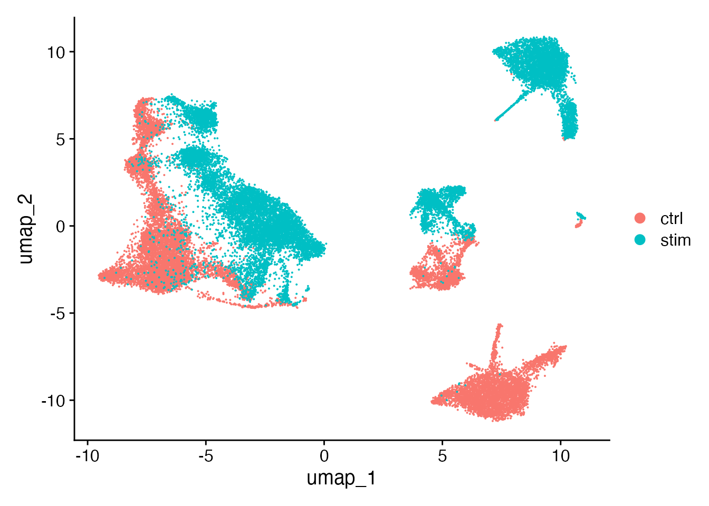
Condition-specific clustering of the cells indicates that we need to integrate the cells across conditions to ensure that cells of the same cell type cluster together.
Why is it important the cells of the same cell type cluster together?
We want to identify cell types which are present in all samples/conditions/modalities within our dataset, and therefore would like to observe a representation of cells from both samples/conditions/modalities in every cluster. This will enable more interpretable results downstream (i.e. DE analysis, ligand-receptor analysis, differential abundance analysis…).
Integration using CCA
## Select the most variable features to use for integration
integ_features <- SelectIntegrationFeatures(
object.list = split_seurat,
nfeatures = 3000
)
## Prepare the SCT list object for integration
split_seurat <- PrepSCTIntegration(
object.list = split_seurat,
anchor.features = integ_features
)
## Find the best buddies or anchors and filter incorrect anchors
integ_anchors <- FindIntegrationAnchors(
object.list = split_seurat,
normalization.method = "SCT",
anchor.features = integ_features
)
## Finding all pairwise anchors
## Running CCA
## Merging objects
## Finding neighborhoods
## Finding anchors
## Found 28193 anchors
## Filtering anchors
## Retained 17668 anchors
## Perform CCA to integrate across conditions
seurat_integrated <- IntegrateData(
anchorset = integ_anchors,
normalization.method = "SCT"
)
## [1] 1
## Warning: Different cells and/or features from existing assay SCT
## [1] 2
## Warning: Different cells and/or features from existing assay SCT
## Merging dataset 2 into 1
## Extracting anchors for merged samples
## Finding integration vectors
## Finding integration vector weights
## Integrating data
## Warning: Assay integrated changing from Assay to SCTAssay
## Warning: Different cells and/or features from existing assay SCTAfter integration, to visualize the integrated data we can use dimensionality reduction techniques, such as PCA and Uniform Manifold Approximation and Projection (UMAP). While PCA will determine all PCs, we can only plot two at a time. In contrast, UMAP will take the information from any number of top PCs to arrange the cells in this multidimensional space. It will take those distances in multidimensional space and plot them in two dimensions working to preserve local and global structure. In this way, the distances between cells represent similarity in expression.
## Run PCA
seurat_integrated <- RunPCA(object = seurat_integrated)
## PC_ 1
## Positive: FTL, TIMP1, CCL2, FTH1, C15orf48, CXCL8, S100A8, FCER1G, TYROBP, S100A4
## LYZ, CD63, LGALS3, S100A9, ACTB, LGALS1, ANXA5, HLA-DRA, SOD2, S100A11
## CD14, SAT1, S100A10, TYMP, CST3, ANXA2, PLAUR, CTSL, CTSB, PSAP
## Negative: RPL3, RPL13, RPS18, RPS6, RPL10, RPL21, RPL13A, RPS2, RPS4X, RPS3
## RPS14, PABPC1, RPL32, RPL7, RPS19, RPS3A, LTB, RPL34, RPS27A, TRAC
## PTMA, RPS27, RPS15A, TRBC1, RPL18A, CCR7, RPS5, RPS12, TRBC2, RPL31
## PC_ 2
## Positive: GNLY, CCL5, NKG7, GZMB, FGFBP2, GZMH, CST7, APOBEC3G, KLRD1, CLIC3
## PRF1, GZMA, CTSW, CHST12, HOPX, HLA-A, CCL4, RARRES3, CXCR3, C1orf21
## HLA-B, AOAH, APMAP, OASL, HLA-C, C12orf75, LDHA, KLRC1, CD8A, TNFRSF18
## Negative: CD74, IGHM, IGKC, HLA-DRA, CD79A, HLA-DRB1, CCR7, RPL13, EEF1A1, RPS18
## RPS6, HLA-DQA1, HLA-DQB1, RPL10, PABPC1, RPL32, LTB, RPL18A, MS4A1, RPS2
## CD83, RPS5, RPL13A, HLA-DPA1, ID3, RPL34, RPS12, RPS23, RPL11, HLA-DPB1
## PC_ 3
## Positive: CD74, IGKC, IGHM, HLA-DRA, HLA-DRB1, CD79A, HLA-DQA1, HLA-DPA1, HLA-DPB1, HLA-DQB1
## CD83, GNLY, HERPUD1, MS4A1, IGLC2, ID3, HLA-DMA, GZMB, CD79B, SYNGR2
## NKG7, HSP90AB1, REL, IGHD, CCL5, TXN, GSTP1, IRF8, MIR155HG, HLA-DMB
## Negative: TRAC, FTL, PABPC1, CCL2, S100A8, CD3D, TRBC1, GIMAP7, RPS18, RPS14
## FTH1, RPL3, S100A9, LTB, RPL13, SARAF, RPL34, RPL10, RPS4X, LDHB
## RPS6, RPL21, SELL, RPL32, RPS15A, CD3E, TRBC2, RPL7, RPL31, LCK
## PC_ 4
## Positive: CD74, IGHM, CCL5, GNLY, IGKC, RPL3, NKG7, GZMB, HLA-DRA, RPL10
## RPS2, CD79A, RPL13, RPS4X, EEF1A1, HLA-DPB1, RPS18, RPS6, RPS19, HLA-DPA1
## HLA-DRB1, RPS3, RPL13A, FGFBP2, RPL7, GZMH, RPL12, RPL21, RPL18A, RPS27A
## Negative: HSPB1, CACYBP, HSP90AB1, HSPH1, SRSF7, SRSF2, HSPA8, UBC, HSPA1A, DNAJB6
## UBB, GADD45B, HSPE1, YPEL5, H3F3B, DNAJB1, EIF1, RSRC2, ZFAND2A, DDIT4
## JUNB, NR4A2, CD69, CREM, HSPD1, SNHG15, BTG1, DNAJA1, HSP90AA1, SOD1
## PC_ 5
## Positive: VMO1, FCGR3A, TIMP1, MS4A7, TNFSF10, CXCL16, CALHM6, LST1, AIF1, JPT1
## MS4A4A, FGL2, SAT1, ATP1B3, IFITM3, CXCL10, TNFSF13B, GBP1, CTSC, CST3
## GBP5, WARS, PLAC8, OAS1, SERPINA1, C3AR1, PILRA, HLA-DPA1, CTSS, ADA
## Negative: CCL2, FTL, CXCL8, IGKC, CCL7, S100A8, IGHM, S100A9, CXCL3, GNLY
## CXCL1, CTSL, CCL3, CXCL2, SERPINB2, IL1B, CD79A, CD63, CCL4, PLA2G7
## CSTB, CCL5, LGALS3, CTSB, CCL4L2, ATP6V1F, IGLC2, ID3, CCL3L1, GZMB
## Plot PCA
PCAPlot(seurat_integrated, split.by = "sample")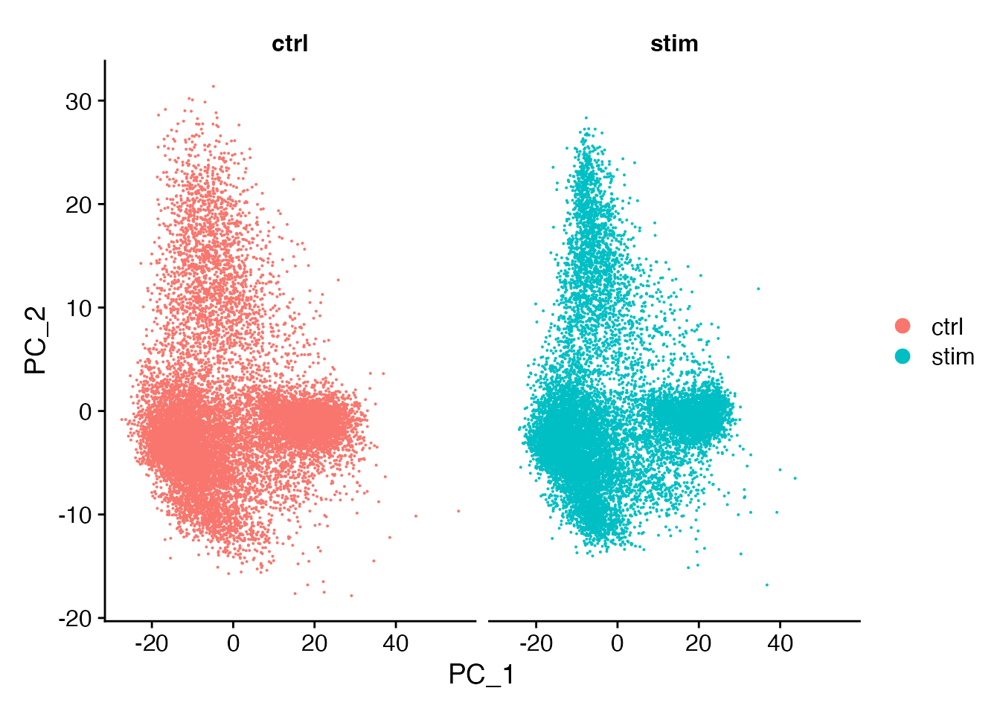
## Run UMAP
seurat_integrated <- RunUMAP(seurat_integrated, dims = 1:40, reduction = "pca")
## 15:36:07 UMAP embedding parameters a = 0.9922 b = 1.112
## Found more than one class "dist" in cache; using the first, from namespace 'spam'
## Also defined by 'BiocGenerics'
## 15:36:07 Read 29629 rows and found 40 numeric columns
## 15:36:07 Using Annoy for neighbor search, n_neighbors = 30
## Found more than one class "dist" in cache; using the first, from namespace 'spam'
## Also defined by 'BiocGenerics'
## 15:36:07 Building Annoy index with metric = cosine, n_trees = 50
## 0% 10 20 30 40 50 60 70 80 90 100%
## [----|----|----|----|----|----|----|----|----|----|
## **************************************************|
## 15:36:08 Writing NN index file to temp file /var/folders/2c/9q3pg2295195bp3gnrgbzrg40000gn/T//RtmpA1Bwup/file40e5bdfb74b
## 15:36:08 Searching Annoy index using 1 thread, search_k = 3000
## 15:36:14 Annoy recall = 100%
## 15:36:15 Commencing smooth kNN distance calibration using 1 thread with target n_neighbors = 30
## 15:36:16 Initializing from normalized Laplacian + noise (using RSpectra)
## 15:36:17 Commencing optimization for 200 epochs, with 1338356 positive edges
## 15:36:28 Optimization finished
## Plot UMAP
DimPlot(seurat_integrated)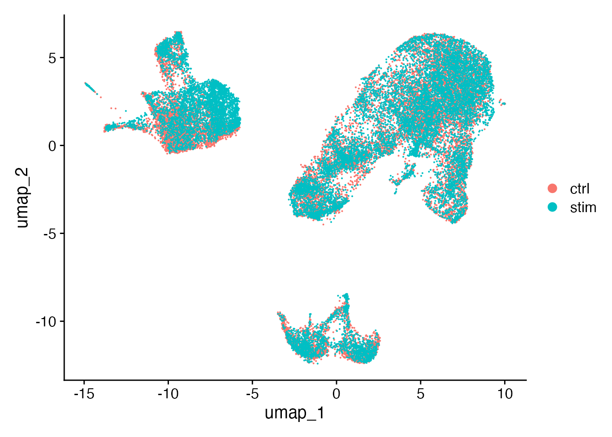
## Save integrated seurat object
# saveRDS(seurat_integrated, paste0(dir, "/data/integrated_seurat.rds"))Clustering
Goals:
- To generate cell type-specific clusters and use known cell type marker genes to determine the identities of the clusters.
- To determine whether clusters represent true cell types or cluster due to biological or technical variation, such as clusters of cells in the S phase of the cell cycle, clusters of specific batches, or cells with high mitochondrial content.
Challenges:
- Identifying poor quality clusters that may be due to uninteresting biological or technical variation
- Identifying the cell types of each cluster
- Maintaining patience as this can be a highly iterative process between clustering and marker identification (sometimes even going back to the QC filtering)
Recommendations:
- Have a good idea of your expectations for the cell types to be present prior to performing the clustering. Know whether you expect cell types of low complexity or higher mitochondrial content AND whether the cells are differentiating
- If you have more than one condition, it’s often helpful to perform integration to align the cells
- Regress out number of UMIs (by default with sctransform), mitochondrial content, and cell cycle, if needed and appropriate for experiment, so not to drive clustering
- Identify any junk clusters for removal or re-visit QC filtering. Possible junk clusters could include those with high mitochondrial content and low UMIs/genes. If comprised of a lot of cells, then may be helpful to go back to QC to filter out, then re-integrate/cluster.
- _If not detecting all cell types as separate clusters, try changing the resolution or the number of PCs used for clustering
Clustering cells based on top PCs (metagenes)
Identify significant PCs
## Explore heatmap of PCs
DimHeatmap(seurat_integrated, dims = 1:9, cells = 500, balanced = TRUE)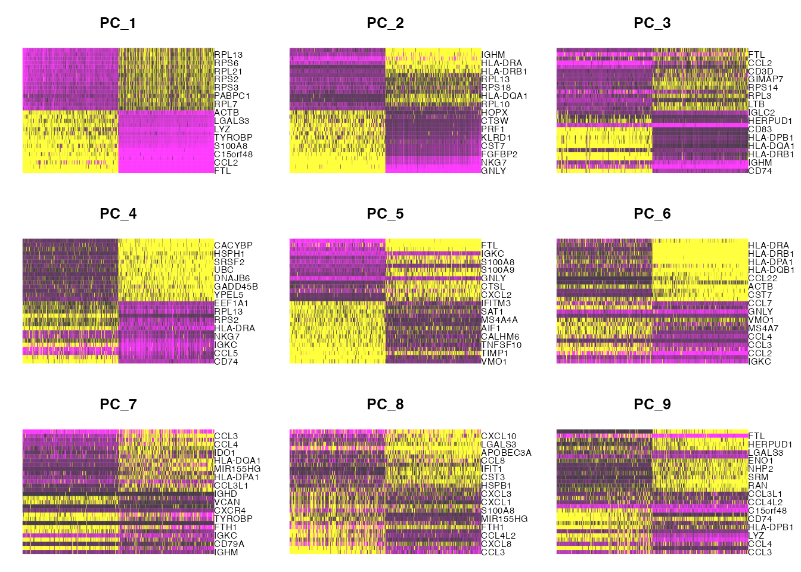
## Printing out the most variable genes driving PCs
print(x = seurat_integrated[["pca"]], dims = 1:10, nfeatures = 5)
## PC_ 1
## Positive: FTL, TIMP1, CCL2, FTH1, C15orf48
## Negative: RPL3, RPL13, RPS18, RPS6, RPL10
## PC_ 2
## Positive: GNLY, CCL5, NKG7, GZMB, FGFBP2
## Negative: CD74, IGHM, IGKC, HLA-DRA, CD79A
## PC_ 3
## Positive: CD74, IGKC, IGHM, HLA-DRA, HLA-DRB1
## Negative: TRAC, FTL, PABPC1, CCL2, S100A8
## PC_ 4
## Positive: CD74, IGHM, CCL5, GNLY, IGKC
## Negative: HSPB1, CACYBP, HSP90AB1, HSPH1, SRSF7
## PC_ 5
## Positive: VMO1, FCGR3A, TIMP1, MS4A7, TNFSF10
## Negative: CCL2, FTL, CXCL8, IGKC, CCL7
## PC_ 6
## Positive: IGKC, IGHM, CCL2, CXCL10, CCL3
## Negative: LYZ, HLA-DRA, HLA-DQA1, HLA-DRB1, HLA-DPB1
## PC_ 7
## Positive: IGHM, S100A8, CD79A, S100A9, IGKC
## Negative: CCL2, CCL3, CXCL10, CCL4, TXN
## PC_ 8
## Positive: CCL3, CCL4, CXCL8, IL1B, CCL4L2
## Negative: CCL2, CXCL10, ISG15, LGALS3, FTL
## PC_ 9
## Positive: CCL3, IDO1, CCL4, CXCL8, LYZ
## Negative: NME1, FTL, MIR155HG, HERPUD1, FABP5
## PC_ 10
## Positive: GNLY, FTL, S100A8, SELL, GZMB
## Negative: CCL2, CREM, FTH1, CXCR4, ANXA1
## Plot the elbow plot
ElbowPlot(object = seurat_integrated, ndims = 40)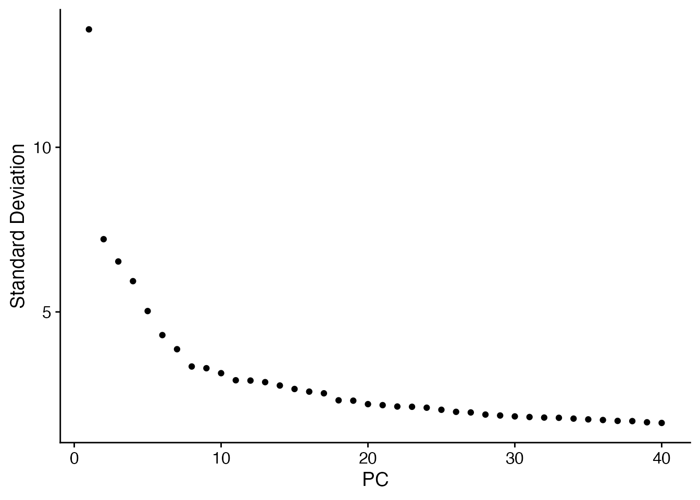
Cluster the cells
## Determine the K-nearest neighbor graph
seurat_integrated <- FindNeighbors(object = seurat_integrated, dims = 1:40)
## Computing nearest neighbor graph
## Computing SNN
## Determine the clusters for various resolutions
seurat_integrated <- FindClusters(
object = seurat_integrated,
resolution = c(0.4, 0.6, 0.8, 1.0, 1.4)
)
## Modularity Optimizer version 1.3.0 by Ludo Waltman and Nees Jan van Eck
##
## Number of nodes: 29629
## Number of edges: 1128589
##
## Running Louvain algorithm...
## Maximum modularity in 10 random starts: 0.9195
## Number of communities: 14
## Elapsed time: 6 seconds
## Modularity Optimizer version 1.3.0 by Ludo Waltman and Nees Jan van Eck
##
## Number of nodes: 29629
## Number of edges: 1128589
##
## Running Louvain algorithm...
## Maximum modularity in 10 random starts: 0.9008
## Number of communities: 16
## Elapsed time: 6 seconds
## Modularity Optimizer version 1.3.0 by Ludo Waltman and Nees Jan van Eck
##
## Number of nodes: 29629
## Number of edges: 1128589
##
## Running Louvain algorithm...
## Maximum modularity in 10 random starts: 0.8836
## Number of communities: 19
## Elapsed time: 5 seconds
## Modularity Optimizer version 1.3.0 by Ludo Waltman and Nees Jan van Eck
##
## Number of nodes: 29629
## Number of edges: 1128589
##
## Running Louvain algorithm...
## Maximum modularity in 10 random starts: 0.8691
## Number of communities: 22
## Elapsed time: 5 seconds
## Modularity Optimizer version 1.3.0 by Ludo Waltman and Nees Jan van Eck
##
## Number of nodes: 29629
## Number of edges: 1128589
##
## Running Louvain algorithm...
## Maximum modularity in 10 random starts: 0.8459
## Number of communities: 27
## Elapsed time: 4 seconds
## Explore resolutions
head(seurat_integrated@meta.data[, 14:20])
## mitoFr nCount_SCT nFeature_SCT integrated_snn_res.0.4 integrated_snn_res.0.6 integrated_snn_res.0.8 integrated_snn_res.1
## ctrl_AAACATACAATGCC-1 Medium 1598 864 2 2 3 2
## ctrl_AAACATACATTTCC-1 Medium 1575 735 1 1 0 1
## ctrl_AAACATACCAGAAA-1 Medium 1563 671 3 3 2 11
## ctrl_AAACATACCAGCTA-1 Low 1587 775 3 3 2 4
## ctrl_AAACATACCATGCA-1 Medium high 1086 374 6 6 6 3
## ctrl_AAACATACCTCGCT-1 Low 1498 626 1 1 0 1# Assign identity of clusters
Idents(object = seurat_integrated) <- "integrated_snn_res.0.8"
# Plot the UMAP
DimPlot(seurat_integrated, reduction = "umap", label = TRUE, label.size = 6)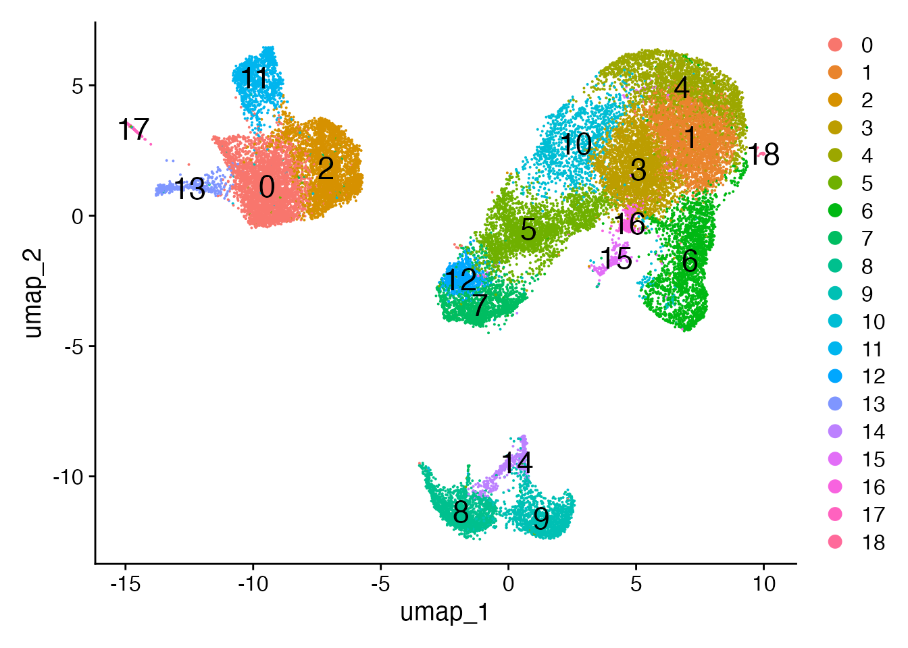
# Assign identity of clusters
# Idents(object = seurat_integrated) <- "integrated_snn_res.0.4"
# Plot the UMAP
# DimPlot(seurat_integrated, reduction = "umap", label = TRUE, label.size = 6)Exploration of quality control metrics
Session Info
Code
sessionInfo()
## R version 4.3.2 (2023-10-31)
## Platform: aarch64-apple-darwin20 (64-bit)
## Running under: macOS Sonoma 14.2.1
##
## Matrix products: default
## BLAS: /Library/Frameworks/R.framework/Versions/4.3-arm64/Resources/lib/libRblas.0.dylib
## LAPACK: /Library/Frameworks/R.framework/Versions/4.3-arm64/Resources/lib/libRlapack.dylib; LAPACK version 3.11.0
##
## locale:
## [1] en_US.UTF-8/en_US.UTF-8/en_US.UTF-8/C/en_US.UTF-8/en_US.UTF-8
##
## time zone: Asia/Singapore
## tzcode source: internal
##
## attached base packages:
## [1] stats4 stats graphics grDevices utils datasets methods base
##
## other attached packages:
## [1] SingleCellExperiment_1.24.0 SummarizedExperiment_1.32.0 MatrixGenerics_1.14.0 matrixStats_1.2.0 glmGamPoi_1.14.3 multtest_2.56.0 ensembldb_2.26.0 AnnotationFilter_1.26.0 GenomicFeatures_1.54.3 AnnotationDbi_1.64.1
## [11] Biobase_2.62.0 GenomicRanges_1.54.1 GenomeInfoDb_1.38.6 IRanges_2.36.0 S4Vectors_0.40.2 AnnotationHub_3.8.0 BiocFileCache_2.10.1 dbplyr_2.4.0 BiocGenerics_0.48.1 metap_1.9
## [21] cowplot_1.1.3 scales_1.3.0 RCurl_1.98-1.14 Matrix_1.6-5 patchwork_1.2.0 lubridate_1.9.3 forcats_1.0.0 stringr_1.5.1 dplyr_1.1.4 purrr_1.0.2
## [31] readr_2.1.5 tidyr_1.3.1 tibble_3.2.1 ggplot2_3.5.0 tidyverse_2.0.0 pbmc3k.SeuratData_3.1.4 SeuratData_0.2.2.9001 Seurat_5.0.2 SeuratObject_5.0.1 sp_2.1-3
## [41] httpgd_1.3.1 fs_1.6.3 here_1.0.1
##
## loaded via a namespace (and not attached):
## [1] ProtGenerics_1.34.0 spatstat.sparse_3.0-3 bitops_1.0-7 httr_1.4.7 RColorBrewer_1.1-3 numDeriv_2016.8-1.1 tools_4.3.2 sctransform_0.4.1 utf8_1.2.4
## [10] R6_2.5.1 mgcv_1.9-1 lazyeval_0.2.2 uwot_0.1.16 sn_2.1.1 withr_3.0.0 prettyunits_1.2.0 gridExtra_2.3 progressr_0.14.0
## [19] cli_3.6.2 textshaping_0.3.7 spatstat.explore_3.2-6 fastDummies_1.7.3 sandwich_3.1-0 labeling_0.4.3 mvtnorm_1.2-4 spatstat.data_3.0-4 ggridges_0.5.6
## [28] pbapply_1.7-2 Rsamtools_2.18.0 systemfonts_1.0.5 R.utils_2.12.3 parallelly_1.37.1 plotrix_3.8-4 RSQLite_2.3.5 generics_0.1.3 BiocIO_1.12.0
## [37] ica_1.0-3 spatstat.random_3.2-3 fansi_1.0.6 abind_1.4-5 R.methodsS3_1.8.2 lifecycle_1.0.4 multcomp_1.4-25 yaml_2.3.8 mathjaxr_1.6-0
## [46] SparseArray_1.2.4 Rtsne_0.17 grid_4.3.2 blob_1.2.4 promises_1.2.1 crayon_1.5.2 miniUI_0.1.1.1 lattice_0.22-5 KEGGREST_1.42.0
## [55] pillar_1.9.0 knitr_1.45 rjson_0.2.21 future.apply_1.11.1 codetools_0.2-19 leiden_0.4.3.1 mutoss_0.1-13 glue_1.7.0 data.table_1.15.2
## [64] vctrs_0.6.5 png_0.1-8 spam_2.10-0 Rdpack_2.6 gtable_0.3.4 cachem_1.0.8 xfun_0.42 S4Arrays_1.2.0 rbibutils_2.2.16
## [73] mime_0.12 survival_3.5-7 interactiveDisplayBase_1.38.0 ellipsis_0.3.2 fitdistrplus_1.1-11 TH.data_1.1-2 ROCR_1.0-11 nlme_3.1-164 bit64_4.0.5
## [82] progress_1.2.3 filelock_1.0.3 RcppAnnoy_0.0.22 rprojroot_2.0.4 irlba_2.3.5.1 KernSmooth_2.23-22 colorspace_2.1-0 DBI_1.2.2 mnormt_2.1.1
## [91] tidyselect_1.2.0 bit_4.0.5 compiler_4.3.2 curl_5.2.1 xml2_1.3.6 TFisher_0.2.0 DelayedArray_0.28.0 plotly_4.10.4 rtracklayer_1.62.0
## [100] lmtest_0.9-40 rappdirs_0.3.3 digest_0.6.34 goftest_1.2-3 spatstat.utils_3.0-4 rmarkdown_2.25 XVector_0.42.0 htmltools_0.5.7 pkgconfig_2.0.3
## [109] sparseMatrixStats_1.14.0 fastmap_1.1.1 rlang_1.1.3 htmlwidgets_1.6.4 DelayedMatrixStats_1.24.0 shiny_1.8.0 farver_2.1.1 zoo_1.8-12 jsonlite_1.8.8
## [118] BiocParallel_1.36.0 R.oo_1.26.0 magrittr_2.0.3 GenomeInfoDbData_1.2.11 dotCall64_1.1-1 munsell_0.5.0 Rcpp_1.0.12 reticulate_1.35.0 stringi_1.8.3
## [127] zlibbioc_1.48.0 MASS_7.3-60.0.1 plyr_1.8.9 parallel_4.3.2 listenv_0.9.1 ggrepel_0.9.5 deldir_2.0-2 Biostrings_2.70.2 splines_4.3.2
## [136] tensor_1.5 hms_1.1.3 qqconf_1.3.2 igraph_2.0.2 spatstat.geom_3.2-9 RcppHNSW_0.6.0 reshape2_1.4.4 biomaRt_2.58.2 BiocVersion_3.17.1
## [145] XML_3.99-0.16.1 evaluate_0.23 BiocManager_1.30.22 tzdb_0.4.0 httpuv_1.6.14 RANN_2.6.1 polyclip_1.10-6 future_1.33.1 scattermore_1.2
## [154] xtable_1.8-4 restfulr_0.0.15 RSpectra_0.16-1 later_1.3.2 viridisLite_0.4.2 ragg_1.2.7 memoise_2.0.1 GenomicAlignments_1.38.2 cluster_2.1.6
## [163] timechange_0.2.0 globals_0.16.2